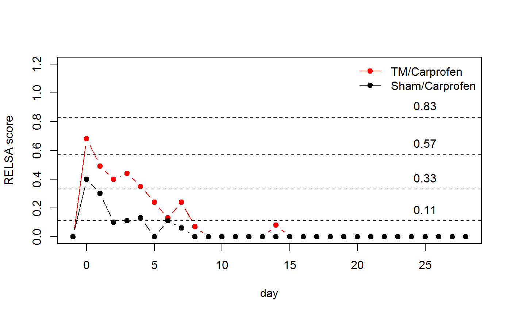

The relsa function from the RELSA package allows the calculation of a (composite) score for relative severity assessment in individual animals using collections of experimental outcome variables or single parameters. The RELSA Vignette covers how to load, access and calculate RELSA scores in detail.
The purpose of this Vignette is to provide a better understanding of what RELSA is, how it is calculated and what it can be used for.
RELSA scores express severity in two ways:
There is a possible third option in which k-means clustering will be applied to the baseline model to obtain k-levels within data range. This way an unbiased subsetting of the calculated scores into classes is achieved (for further classification analysis etc).
Thus, animals from different experimental backgrounds and conditions can be compared. However, it is important to note that the RELSA score is a reflection of what happens in the measured data. If the data, for some reason, do not reflect severity in animals the RELSA score might be unsuited for comparisons.
This section explains how the RELSA score is calculated step by step. The relsa function accepts normalized data in RELSA format. How these tables can be obtained is explained in detail in the RELSA Vignette. The function also requires a reference model (bsl) to build relative context to an animal model with “known” severity. This severity can be of qualitative nature as tested animals will always be compared to this model - thus the word “relative” in RELSA. With the drop object variables can be excluded from the current analysis. turnvars defines variables where measured values increase rather than decrease when severity impacts the animal.
# RELSA function
relsa (set, bsl, a=1, drop=NULL, turnvars=NULL)The resulting table of normalized variables looks like the following example for a transmitter-operated mouse with 12 measured variables. Not all of them are needed in the RELSA calculation (bw, bwc and clinical score are strongly correlated so that just bwc is used; further, mouse grimace scale 30 min and 180 lack baseline values and show missing data on the following days, so that they can be skipped as well).
| day | bw | bwc | score | mgs | mgs30 | mgs180 | bur2h | burON | hr | hrv | temp | act |
|---|---|---|---|---|---|---|---|---|---|---|---|---|
| -1 | 18.4 | 100.00 | 0 | 100.00 | NA | NA | 100.00 | 100.00 | 100.00 | 100.00 | 100.00 | 100.00 |
| 0 | 16.1 | 87.50 | 2 | 112.50 | 0.86 | 0.36 | 26.46 | 62.12 | 145.65 | 16.50 | 98.83 | 11.79 |
| 1 | 16.7 | 90.76 | 2 | 193.75 | NA | NA | 90.56 | 135.72 | 128.96 | 38.96 | 102.42 | 38.25 |
| 2 | 17.1 | 92.93 | 2 | 165.62 | NA | NA | 74.97 | 137.62 | 118.63 | 54.44 | 101.44 | 33.02 |
| 3 | 17.3 | 94.02 | 1 | NA | NA | NA | NA | NA | 106.30 | 56.89 | 100.27 | 26.88 |
| 4 | 17.3 | 94.02 | 1 | 65.62 | NA | NA | 97.36 | 96.13 | 115.87 | 57.39 | 101.29 | 36.37 |
In the next step, differences to baseline values are calculated. As the baseline is 100 % in both “directions” (increasing and decreasing values), the approach is rather straight forward:
for decreasing values
delta = 100 - subdata[-1]
for increasing values
delta = 100 - subdata[-1]
delta[,turnvars] = delta[, turnvars]* -1
With [-1] the daily baseline values at day=-1 are not recognized in the calculation.
Also, after this step all differences <0 are set to 0 so that there are no negative values. A negative value means full recovery. Negative values play no role in the RELSA calculation so that they are eliminated. Zeros also point to non-missing but recovered data. This difference is important since missing values will not contribute to mathematical calculations such as the mean. This would skew the results and give weight to variables that are not present in the data.
An example for a cleaned difference matrix (D) is shown in the following example (in which the following variables were dropped: c(“bw”,“score”,“mgs30”,“mgs180” ) and turned: c(“hr”, “mgs”,“temp” ). Missing data are indicated as NAs.
| bwc | mgs | bur2h | burON | hr | hrv | temp | act |
|---|---|---|---|---|---|---|---|
| 0.00 | 0.00 | 0.00 | 0.00 | 0.00 | 0.00 | 0.00 | 0.00 |
| 12.50 | 12.50 | 73.54 | 37.88 | 45.65 | 83.50 | 0.00 | 88.21 |
| 9.24 | 93.75 | 9.44 | 0.00 | 28.96 | 61.04 | 2.42 | 61.75 |
| 7.07 | 65.62 | 25.03 | 0.00 | 18.63 | 45.56 | 1.44 | 66.98 |
| 5.98 | NA | NA | NA | 6.30 | 43.11 | 0.27 | 73.12 |
| 5.98 | 0.00 | 2.64 | 3.87 | 15.87 | 42.61 | 1.29 | 63.63 |
The baseline model is required for context. The values in the baseline model show the extrema for each variable in the current model. As such, they are the maximum (or minimum) reached values coding for some virtually known or prospective severity. Every test animal with its unique values and variables will now be compared to these baseline values arithmetrically to yield a weight factor (wf):
\[wf=\frac{D}{BSLextrema}\] For example, if the lowest reached body weight change (bwc) value in an animal of the training data is, e.g. 15 % and the actual loss in a test animal is 11 % , wf results to wf=11/15 = 0.73. In other words, the actual mouse reached 73 % of the maximum bwc escalation of the baseline data. Since context is relevant here, this also means that the animal also experiences 73 % of the maximum reached severity of the baseline model. This is repeated for each day and available variable.
Following the example above, the resulting wfs are represented in the following matrix:
| bwc | mgs | bur2h | burON | hr | hrv | temp | act |
|---|---|---|---|---|---|---|---|
| 0.00 | 0.00 | 0.00 | 0.00 | 0.00 | 0.00 | 0.00 | 0.00 |
| 0.81 | 0.04 | 0.74 | 0.38 | 0.85 | 0.91 | 0.00 | 0.92 |
| 0.60 | 0.31 | 0.09 | 0.00 | 0.54 | 0.66 | 0.55 | 0.65 |
| 0.46 | 0.21 | 0.25 | 0.00 | 0.35 | 0.50 | 0.33 | 0.70 |
| 0.39 | NA | NA | NA | 0.12 | 0.47 | 0.06 | 0.76 |
| 0.39 | 0.00 | 0.03 | 0.04 | 0.30 | 0.46 | 0.29 | 0.67 |
The weights are showing the magnitude of variable escalation. They generalize the mean differences in each animal that are further regularized by the extrema of the reference model. Calculating the mean for these values will not reflect the actual situation in terms of severity. Because we are looking for extrema that indicate potential severity, magnitude matters. In statistics this is traditionally solved by squaring numbers. Therefore, we deem the root mean square of the combined weight factors as a reasonable choice for the final RELSA score calculation - giving larger deltas (weights) more weight.
\[RELSA=\sqrt{\frac{1}{n}\sum_{i=1}^n (wf_i)^2}\]
| day | RELSA |
|---|---|
| -1 | 0.00 |
| 0 | 0.68 |
| 1 | 0.49 |
| 2 | 0.40 |
| 3 | 0.44 |
| 4 | 0.35 |
In the end, comparisons between, e.g. sham and transmitter-operated animals are possible. In the following example seven variables are used in the calculation of the respective RELSA scores (time points are days here). Day=-1 is the baseline physiological state and day=0 is post-operational state with expected maximum severity.
It can clearly be seen that the relative severity of the transmitter implantation is larger than in the sham operated animal. However, the course of both lines are rather similar, indicating that experimental procedures are very well reflected in each of the two cases and differences can be attributed to severity escalation.
Further, cluster levels show that the sham-operated animal recovers faster. Here, the slope of the RELSA curve is much steeper than in the transmitter-operated animal and values decrease much faster back to physiological levels (the sham animal recovers at around day 2 compared to day 8 in the transmitter-operated animal).
